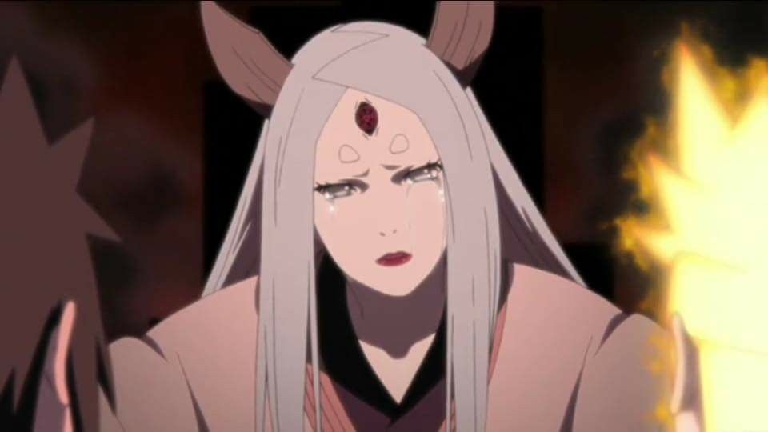
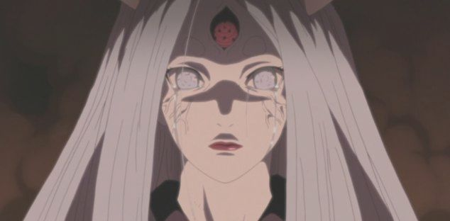

Kaguya Otsutsuki (大筒木カグヤ,Otsutsuki Kaguya) was once a princess from the era long before the foundations of the ninja clans and villages,Princess Kaguya Otsutsuki was the daughter of a long passed king Otsutsukitarine no Miko and is the mother of Hagoromo Otsutsuki and Hamura Otsutsuki, she was the being who consumed the forbidden fruit of the Shinju and thus been said to became the progenitor of all chakra, and the embodiment of the beast that would become known as the infamous and powerful Ten-Tails.
Kaguya Otsutsuki is a princess who had hailed from an unknown planet, and had lived long before the founding of any of the hidden villages, she was said to exist during an era of endless wars between mankind. She grew up with a loving father and a mother who cared for her she grew up as a Princess under the ruling of her now deceased Father and Mother so she was treated as a mannered and calm woman but for years she ernes to leave her planet. And to find a place where she desired a Longing for peace, Kaguya grew tired of the continuous body count and deaths of millions one day she decided that it was time for her to obtain god-hood and obtain god-like powers in order to put an end to all conflicts. For this reason, she defied the most sacred of taboos by consuming the forbidden fruit of the Shinju, becoming one with the holy tree's godly power. She had ended all wars around the world and for her deed of single-handedly ending the wars, Kaguya was worshipped as the widely known aliases Rabbit Goddess.As time passed on , however she didn't as she grew Immortality, the power she held ultimately had corrupted her mind completely, and as Kaguya sought to prevent humanity from causing any further harm to the world she called her nursery by trapping them within one of the most power genjutsu's in history the Infinite Tsukuyomi, and converted the victims that were God: Nativity of a World of Tree by the Shinju into White Zetsu Army. This and the other horrifying acts Kaguya committed struck terror into the hearts of the then-powerless people around her, for which she would be feared as aDemon. Kaguya later gave birth to two sons: Hagoromo Otsutsuki and Hamura Otsutsuki, both of whom inherited the same powerful chakra she was currently wielding and unique one with her dojutsu and th eother with a more unique dojutsu along with it they also inhertied her protrusions. As she watched them grew she also increased in anger at the power gained by her children, Kaguya and the Shinju melded into an single entity that would later become known as the Ten-Tails with one singular goal to reclaim the appereant stolen chakra she felt was rightfully hers. The Ten-Tails rampaged throughout the lands until Kaguya's sons had finally managed to defeat her, and using the most powerful Fuinjutsu to seal the beast and their mother away. Before her sons could completely seal her, Kaguya had used her Will Materialisation technique manifested in the form of the now known and nearly ancient Black Zetsu. This manifestation would soon begin its machination to revive Kaguya. Her son Hagoromo would later teach humanity to use chakra as a way to connect to one another a way to show each others feelings without having to know them, rather than weaponizing it as she had done before. With Black Zetsu only agenda of reviving its mother, Black Zetsu manipulated the Sage's sons Indra Otsutsuki, and his descendants of the Uchiha Clan, along with Asura Otsutsuki's descendants and drawing the Senju Clan, all in an attempt to get one of them to awaken the Sages legendary Rinnegan. And for many years he would had found a young Madara Uchiha the transmigration of the sages Eldest Son who would eventually succeeded in doing so, and Black Zetsu began secretly manipulating world events to have his mother reclaim the world she once captured.
Kaguya herself has not shown to age showing her absolute immortality after and after obtaining the ability to manipulate powerful chakra from the Shinju's fruit, Kaguya developed both a god-complex and messiah-complex, believing that chakra rightfully belonged to her alone and that only she could protect and unite the world. Despite her initial desire for peace like her sons and grandsons, Kaguya opted to use her great and terrible power to submit everyone to her will. As Hagoromo noted, humanity around that time began to fear her as a demon. She uses the archaic pronoun "warawa" when referring to herself — a sign of ancient nobility. Kaguya also displays a degree of affection, as she appears to care very deeply about the world, viewing it as a nursery that she didn't want humanity damaging any further. Although she openly stated that she hated her own sons for their ability to wield chakra and created the Ten-Tails to get it back by force, she openly wept when looking at Naruto and Sasuke, who reminded her of them. While her belief of chakra should belong to her alone made her somewhat obsessive in retrieving it from everyone else, she is willing to listen to Black Zetsu's suggestion on killing Naruto to prevent him and Sasuke from sealing her away, though she expressed reluctance that she must destroy a large reservoir of chakra to preserve her freedom. Despite her sombreness, Kaguya can nonetheless be stunned by unexpected events.